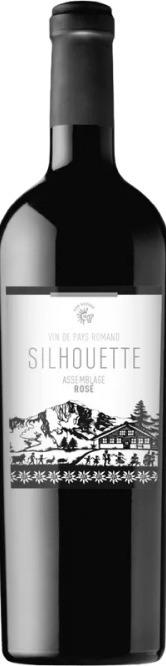
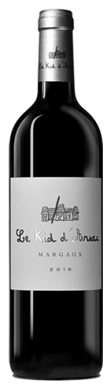
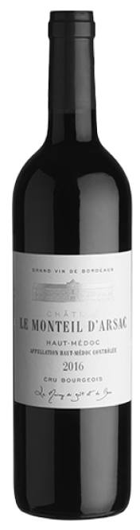

Pinot Noir Gamay
100% Chardonnay
2022
2003
Sélection des Côteau de Sierre
Viandes rouges, fromage
14° - 17°
5ans - 10ans
5Fermentations et élevages de 18 mois en barriques pour chacun
des cépages avant assemblage en cuve inox.
L'Éclat de Lune s'ouvre sur des arômes délicats de fleurs blanches
et de pêche juteuse, accompagnés de nuances subtiles de noisette
grillée. En bouche, ce vin se révèle d'une grande élégance, avec
une acidité vive qui équilibre parfaitement la richesse des fruits
mûrs. Les notes de vanille et de zeste de citron persistent en
finale, offrant une belle longueur et une complexité saisissante.
Boutique

Silhouette
Un vin équilibré et doux en bouche.

Le Kid
Un vin puissant et riche en saveurs.

Le Monteil
Un vin aux arômes dominants de fruits.

Céline
Un vin qui remplit bien la bouche avec une belle persistance
aromatique.